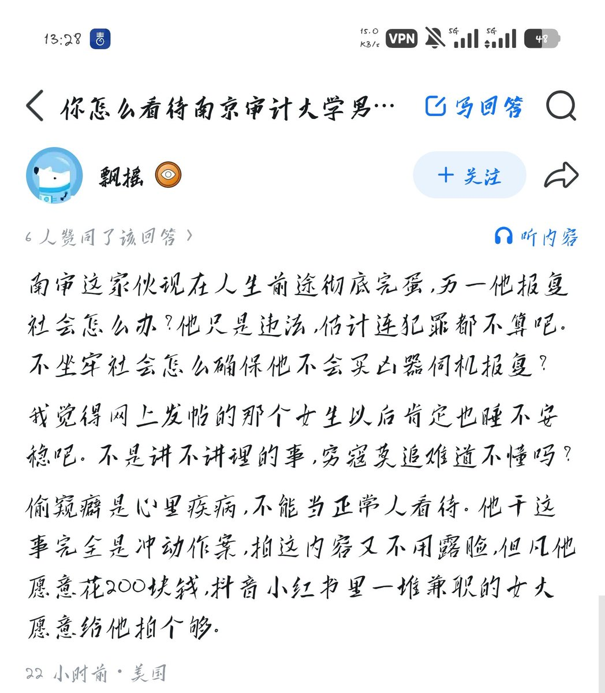

432InfantryRegiment
@432Ifantrygroup
你反应的问题倒是蛮到位嘛，我看美国司法系统这个先进的部分我们国家也应该学习一下，你不是要报复社会吗？给你戴上电子脚铐，敢未经报备出门就是通缉犯。论铁拳的效率中国可比美国强多了，效果肯定好。

432InfantryRegiment
@432Ifantrygroup
我看你ip不是在美国，《梅根法案》你不知道？
美国各州都建立了公开的网站。任何人只要输入邮编，就能查到自己家附近住着哪些性犯罪者。网站上会公开犯罪者的照片、真实姓名、当前住址、工作单位、所犯罪行、甚至汽车牌照和型号。高风险犯罪者需要终身登记，信息每隔 90 天甚至更短时间就要去警局更新 https://t.co/C350At7kYx